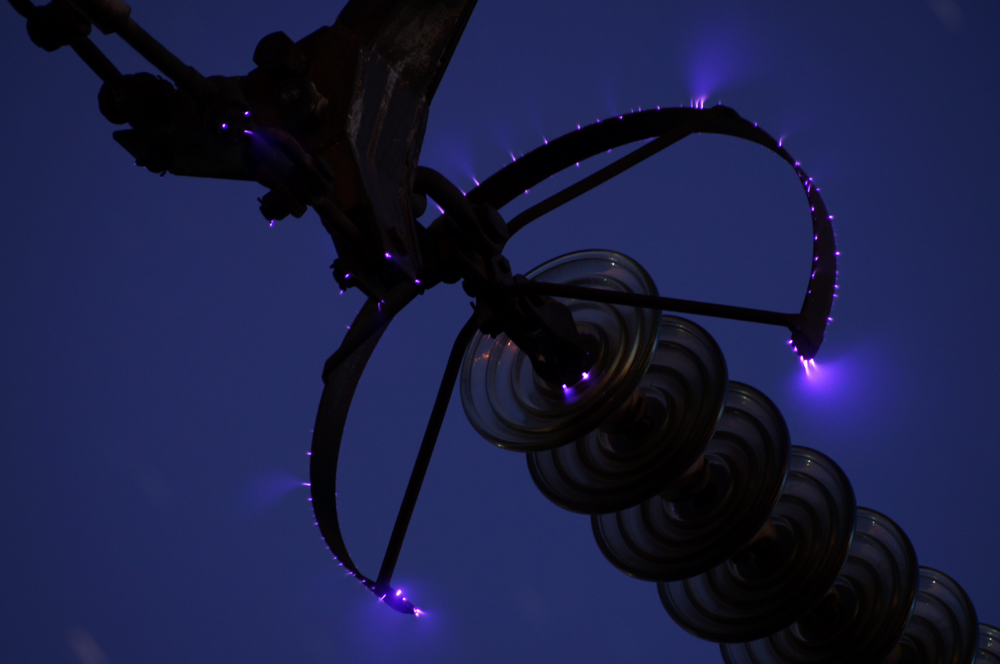

Introduction
On the wikipedia page for corona discharge, you will see a cool picture (below) of the corona disharge on a 500 kV power line. This project is an attempt to take some similar pictures and maybe do some analysis later.

Background
When the electric field in a fluid exceeds a certain value, the dielectric strength, the fluid becomes ionized and conductive. In particular, air's dielectric strength is about 30 kilovolts per centimeter. Outside a conductor, the electric field tends to be the strongest at points with smaller radii of curvature.(*) Hence, on a high voltage object, the electric field right outside the sharp points has the possibility of exceeding the dielectric strength of the fluid that surrounds it.
Corona discharge begins with a single, natural, ionization event that occurs within the area of high electric field. The separated electron is accelerated to a high energy by the high electric field, and it can ionize another atom. This chain effect is known as the Townsend discharge and creates a non-thermal plasma. (The plasma is non-thermal because the electrons are moved so much faster than the positive ions due to their smaller mass.)
Whether the corona can appear is dependent on the strength of the electric field and the mean free path of the electrons. If the electric field is too weak, the free electron will collide with another atom before attaining a sufficient energy. If the mean free path is too short, the same is true. This is why the dielectric strength of air is lower at higher altitudes.
The light emitted by the corona discharge occurs during the recombination of electrons and positive ions, when the electron drops into a lower energy level.
On high voltage power lines, corona discharge is a problem because it leaks power into the air. It can be reduced by eliminating sharp points on power lines, using things like corona rings.
(*) This is a general rule, but depends significantly on the actual shape of the conductor. There's no actual mathematical relation between radius of curvature and charge density.
Here is a paper that talks about it more.
Plan
Here are some local high voltage power lines:
Caltopo map. I'll probably go check out which of the lines have higher voltage. The Monta Vista substation should have transmission lines of up to 280 kV. There are some ways to guess the voltage on a transmission line, one of which is to count the number of insulator disks or length of insulation connecting the wires and the tower.
It will be best to do it when the moon is not yet up or at a new moon. Clear skies will also reduce light pollution. Capturing as little light pollution as possible is important because it allows for a longer exposure to properly capture the corona. It should be noted that the corona discharge is much greater when it is raining or very humid. I might try that as well.
I will use a Canon 60D with a 75-300mm lens on a tripod.
Update 1:
(1/2/19)
I can't find my lens! I will do some digging. In the meantime, I went to check out some of the towers nearby. The substation is totally blocked off, and I can't get a good access to the towers there. There are a ton of barbed wires. Normally that doesn't phase me, but hey they actually have dangerous things, they could have seriously good reasons for fencing things off. So I had to check out some of the big transmission lines in the hills. The one I liked the best is situated right next to a little hill, so I can actually get a closer view if I climb up the hill. I counted 15 insulator disks, made of some sort of ceramic material I think. I know the maximum voltage at the Monta Vista substation is around 250 kV, so I'm guessing that this is it.